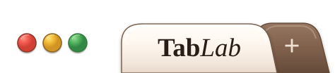

Our site is undergoing
planned maintenance.
We monitor, maintain, and repair the websites we build, so small issues stay small.
We're on it.
Please come back soon.

We monitor, maintain, and repair the websites we build, so small issues stay small.
We're on it.
Please come back soon.